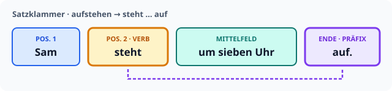

Trennbare Verben und die Satzklammer
Mit einem KI-Tutor lernen
Ein KI-Tutor erklärt dir diese Seite und hilft dir bei den Aufgaben. Wähl deinen Assistenten:
Mit Claude öffnen Mit ChatGPT öffnen Mit Mistral Vibe öffnen
Du nutzt dein eigenes Konto beim Anbieter. Der Assistent ist kein Angebot von lernapps.net: lernapps liefert nur Inhalte und Aufgaben. Die Wahl gilt für alle Seiten, nur auf diesem Gerät.
Peters Tagesablauf in Lindenberg
Viele alltägliche Verben im Deutschen bestehen aus zwei Teilen: einer betonten Vorsilbe (auf-, ein-, an-, mit-) und dem Grundverb. Im Hauptsatz spalten sie sich zur Satzklammer.

© CC0-1.0Das konjugierte Grundverb bleibt auf Position 2; die Vorsilbe schließt rechts die Satzklammer.
Aufgabe
Lösung
Frau Weber kauft heute im Supermarkt ein. richtige Antwort
Richtig: kauft steht konjugiert auf Position 2, und ein steht ganz am Satzende.
Frau Weber einkauft heute im Supermarkt.
Im Hauptsatz im Präsens wird einkaufen immer getrennt: kauft … ein.
Frau Weber kauft ein heute im Supermarkt.
Die Vorsilbe ein wandert ganz ans Ende hinter alle anderen Satzkarten.
Die rechte Klammer (die Vorsilbe) wartet immer ganz am Ende — auch in Fragen (*Kaufst du heute ein?*) und im Imperativ (*Ruf mich an!*).
Häufige trennbare Verben
| Deutsch | Beispiel · Hinweis | Englisch |
|---|---|---|
| aufstehen | Peter steht um sieben Uhr auf. Peter gets up at seven o'clock. | to get up |
| einkaufen | Wir kaufen Brötchen ein. We are buying rolls. | to go shopping |
| anrufen | Ich rufe meine Oma an. I call my grandma. | to call (by phone) |
| anfangen | Die Schule fängt um acht Uhr an. School starts at eight o'clock. Vokalwechsel a → ä: Der Unterricht fängt um acht Uhr an. | to begin, to start |
| mitkommen | Kommst du ins Kino mit? Are you coming along to the cinema? | to come along |
| fernsehen | Mina sieht abends selten fern. Mina rarely watches TV in the evening. Vokalwechsel e → ie: Mina sieht abends fern. | to watch TV |
Woran erkennst du trennbare Vorsilben?
Typische trennbare Vorsilben sind ab-, an-, auf-, aus-, ein-, fern-, mit-, vor-, zu-, zurück-. Beim Sprechen liegt die Betonung immer auf der Vorsilbe (AUFstehen, EINkaufen).
Übung
Aufgabe
Wähle die passende Vorsilbe für das Satzende.
- Mina watches TV in the evening. (fernsehen) → Mina sieht abends ….
- Lukas calls Nadia after school. (anrufen) → Lukas ruft nach der Schule Nadia ….
- We go shopping on Saturday. (einkaufen) → Wir kaufen am Samstag ….
Lösung
- Mina sieht abends fern.
- Lukas ruft nach der Schule Nadia an.
- Wir kaufen am Samstag ein.
Die betonte Vorsilbe (fern, an, ein) wandert immer ganz ans Ende des Satzes.
Aufgabe
Lösung
Richtige Antwort: 1. Am Abend, 2. ruft, 3. Peter, 4. seine Oma, 5. an.
Am Abend (Pos. 1) + ruft (Pos. 2 Verb) + Peter seine Oma (Mitte) + an (Vorsilbe am Ende).
Aufgabe
Schreibe jeden Satz mit dem trennbaren Verb im Präsens. Denke an Position 2 und das Satzende!
- Lukas gets up early. (aufstehen · früh)
- Class starts at eight o'clock. (anfangen · Der Unterricht · um acht Uhr)
- Are you coming along today? (mitkommen · du · heute)
Lösung
- Lukas steht früh auf.
- Der Unterricht fängt um acht Uhr an.
- Kommst du heute mit?
Egal ob Aussage oder Frage: Das konjugierte Grundverb ankert vorn (Pos. 2 oder Pos. 1), und die Vorsilbe schließt ganz rechts die Klammer.
Fehler gefunden oder eine Idee für diese App?